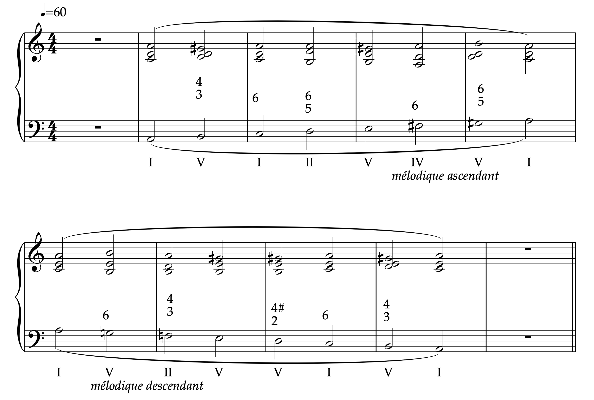

Étape 3 : Règle de l’octave en mineur — 3 derniers degrés
Quatre tonalités · La, Mi, Si, Ré

Jouez l’étape 3 de la règle de l’octave en mineur dans les quatre tonalités — La, Mi, Si et Ré — en suivant l’accompagnement audio.
Les tonalités s’enchaînent automatiquement. Vous pouvez aussi choisir directement une tonalité.